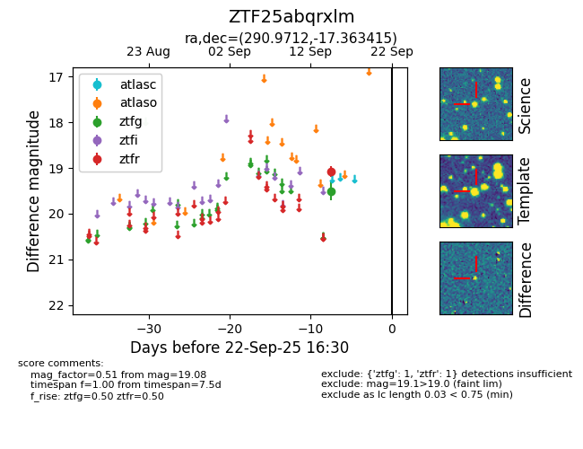

FINK: ZTF25abqrxlm
Lasair: ZTF25abqrxlm
ALeRCE: ZTF25abqrxlm
ZTF25abqrxlm (ztf,fink)
equatorial (ra, dec) = (290.9712,-17.36342)
galactic (l, b) = (20.7377,-14.82918)

last ztfg=19.50, ztfr=19.08
1 ztfg, 1 ztfr detections